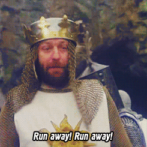

Controle a sua carreira
Maurício Linhares
A vida acontece enquanto olhamos o tempo passar
Você tem um plano?
Como normalmente é a carreira de quem programa?
Dev junior
Alguém escolhe o que você vai fazer
Dev pleno
Você escolhe o que vai fazer
Sênior e além
Você tem que descobrir o que vai fazer
Sua carreira acontece
De um jeito ou de outro
Não é mais fácil planejar?
Objetivos

Onde quero estar?
É difícil chegar em um lugar que você não sabe onde fica
Qual o seu próximo objetivo?
- Virar sênior?
- Liderar um projeto?
- Aprender uma ferramenta/linguagem/framework novo?
Planeje com a sua gestão
Defina milestones
Cheguei
E se a gestão disser não?
Trabalhe em profit centers
Entenda do negócio
Ontem, hoje e amanhã
Crie um documento com os seus sucessos
Se você não se vender, ninguém vai comprar